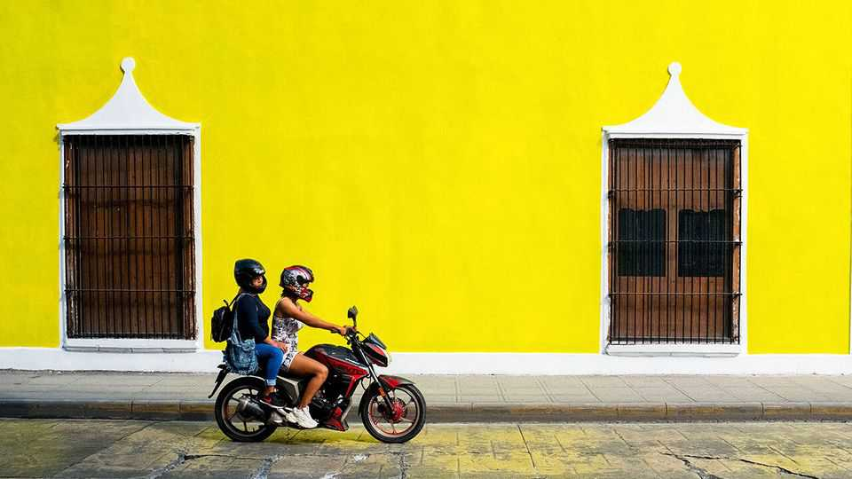

Latin America has caught motorcycle fever
They are cheap, nimble and provide employment, but at a deadly cost

Oct 8th 2026
A RAMPANT SPECIES has taken over the urban jungles of Latin America. Small, noisy and remarkably good at squeezing into tight spaces, motorcycles have found the crowded streets of Bogotá, São Paulo and Mexico City an accommodating habitat. They swarm between cars at traffic lights, crowd pavements and are the trusty steeds of delivery riders.
They are also multiplying fast: annual motorcycle sales across the region doubled from 3m in 2019 to almost 6m last year. In 2010 there were just five registered motorcycles for every 100 people; by 2024 there were 14. Mexico’s motorcycle fleet more than quadrupled in the decade to 2025, from 2.6m to 10.5m.

Motorbikes are a cheap and easy way to weave through horribly congested cities. As public transport has failed to keep pace with rapid, and often informal, urban sprawl, motorcycles have filled the gap. Their buyers are disproportionately young, poor and male. Many work as couriers. Brazil had 351,000 motorcycle gig workers in 2024, 66% more than two years earlier. In Mexico an industry group estimates that seven in ten motorcycles sold in 2023 were bought for work, including for deliveries and for use as motorcycle taxis.
Governments have added fuel to the boom by encouraging their use, in part to support growing domestic industries. In Colombia, where more than 90% of motorcycles sold are assembled locally, bikes of up to 125cc are exempt from vehicle tax; none pays any road tolls. In June Brazil launched subsidised loans for delivery workers to buy locally made bikes.
Good reasons exist to encourage the use of motorcycles. They not only provide employment for poor and unskilled workers, they may also help labour markets function better by enabling people to take jobs farther from home.
A wealth of evidence shows that making commutes cheaper and quicker can lower unemployment and lift wages. Many of the gains from public transport go to skilled workers, since routes tend to run to city centres, where many of the best jobs are found. A study of Montevideo, the capital of Uruguay, for example, showed that the poorest 20% of the city’s population could access just 21% of job opportunities in 40 minutes. That contrasts with the richest 20%, who could access 54% of jobs, according to a paper by Diego Hernández of the Catholic University of Uruguay and co-authors. This suggests motorcycles may have an important role to play in improving the lives of poorer people, particularly since unskilled jobs are often widely dispersed around the periphery of cities, making them harder to reach.
Still, such benefits come at a cost. After declining for much of the previous decade, road deaths across Latin America and the Caribbean rose by about 10% between 2021 and 2024 to around 100,000 a year, reckons the Inter-American Development Bank. A surge in motorcyclists’ deaths was responsible for much of the increase. These doubled over the ten years to 2023 in Chile and especially Colombia, where almost a third of households own a motorbike and riders account for 62% of road deaths, compared with roughly a third worldwide.
Such carnage is not inevitable, says Ricardo Pérez-Núñez of the Pan American Health Organisation, who points out that motorcycle fatalities have fallen over the same period in many countries in other regions. One reason for the divergence is regulation. Few riders in Latin America are forced to wear helmets that meet proper safety standards. Rules on licences, speeding and drunk-driving are often ignored. Delivery work makes matters worse. Riders are paid per job, encouraging them to drive fast and work long hours, often with one eye on their phones.
The trouble is that politicians have little appetite for tougher rules, which risk angering millions of working-class riders. In Bogotá temporary restrictions on motorcycles prompted protests and road blockades last year. Moreover, moteros are organised and increasingly courted as a political constituency. ■